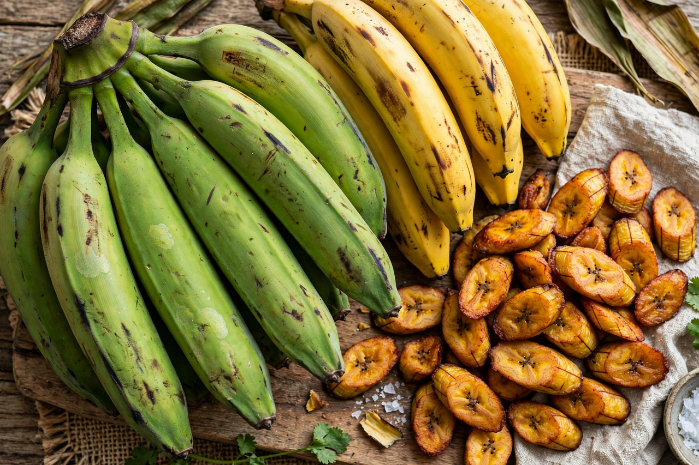

Plantain (cooking)

Kingdom: Plantae
Genus: Musa
Group: AAB, ABB and other hybrid groups
Use: Cooked fruit, staple starch
Cooking plantains are banana cultivars in the genus Musa whose fruits are generally used in cooking rather than eaten raw. In botanical terms there is no formal distinction between bananas and plantains; in usage, "plantain" usually refers to starchy bananas that are cooked before eating, while "banana" refers to sweet dessert varieties eaten raw.
Description
Plantains are typically longer and thicker-skinned than dessert bananas, with firmer, starchier flesh and lower sugar content when unripe. The fruit passes through stages of ripeness — green, yellow, and black — and each stage is used differently in the kitchen: green plantains are boiled or fried as a starchy vegetable, yellow ones are semi-sweet, and black-ripe plantains are soft and sweet enough for baking or frying as a dessert.
Culinary use
Plantains are a staple food in West and Central Africa, the Caribbean, Central America, and parts of South America and Southeast Asia. Signature preparations include tostones (twice-fried green plantain slices), maduros (fried ripe plantain), mofongo (mashed fried plantain with garlic and pork cracklings, from Puerto Rico), fufu accompaniments in Ghana, and boiled plantain served with stews in Nigeria and Cameroon. Plantain flour and chips are also common products.
Cultivation and trade
Plantains are grown by smallholders throughout the humid tropics and are a major source of carbohydrates and income. Production is threatened by diseases such as Panama disease and black sigatoka. Unlike dessert bananas, most plantains are consumed close to where they are grown, though export trade to diaspora markets in Europe and North America is significant.